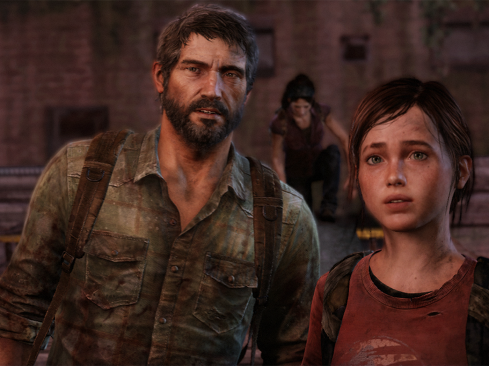
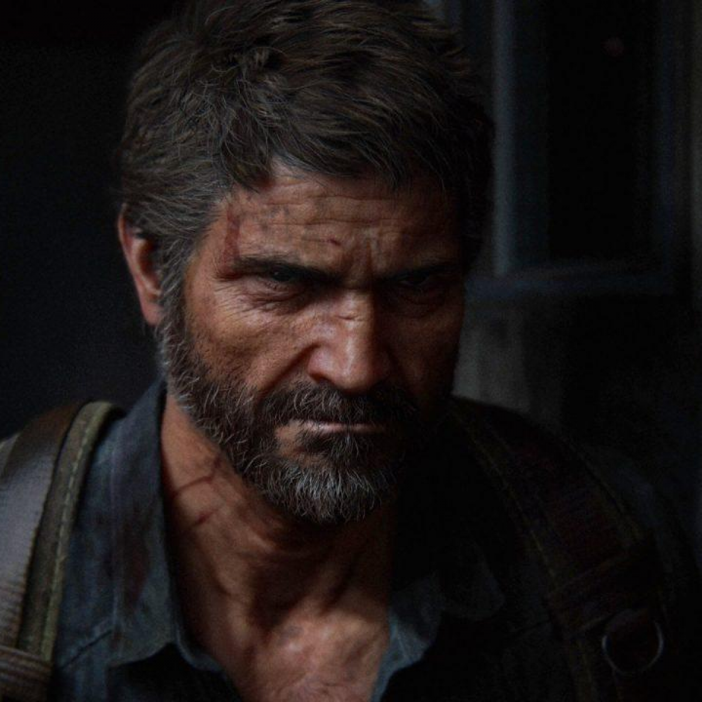
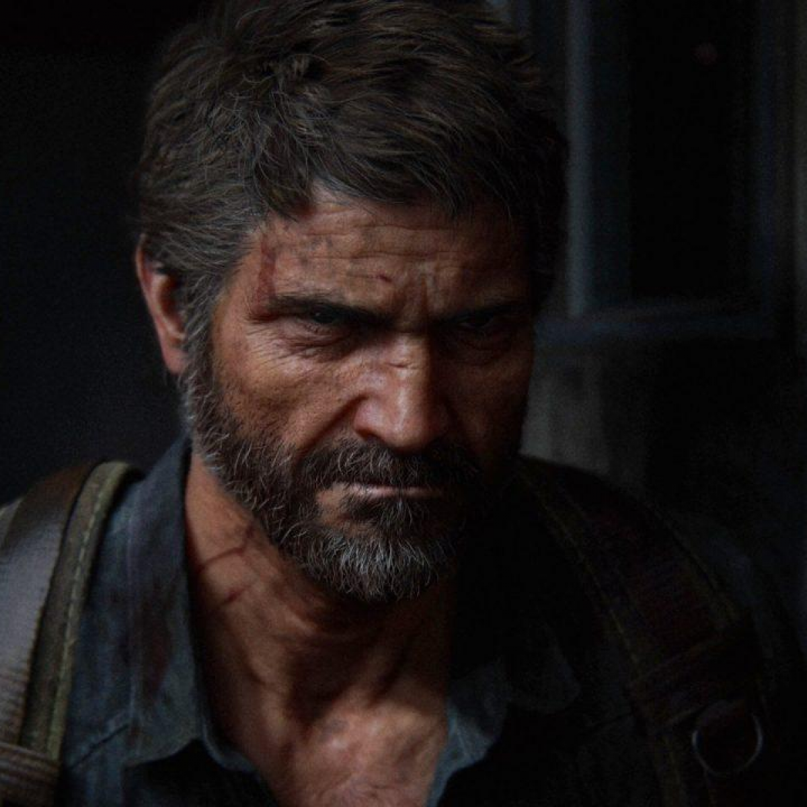
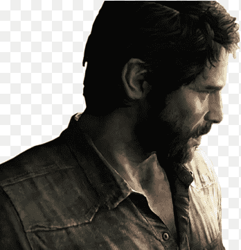

THE LAST OF US INFORMATION
Part 1(первая часть)(кратко)
Действие игры происходит в постапокалиптическом будущем на территории бывших Соединённых Штатов Америки спустя двадцать лет после глобальной пандемии, вызванной опасно мутировавшим грибком кордицепс. Сюжет посвящён путешествию главных героев — контрабандиста Джоэла и девочки-подростка Элли, сыгранных Троем Бейкером и Эшли Джонсон с помощью технологии захвата движения. Креативным директором и сценаристом выступил Нил Дракманн. Музыка к игре написана композитором Густаво Сантаолальей.
gellery
 

Part 2(вторая часть)(подробно)
Спустя четыре года после событий The Last of Us Джоэл (Трой Бейкер) и Элли (Эшли Джонсон) живут в поселении Томми, располагающемся на территории бывшего города Джексон (Вайоминг). Элли уже 19 лет, в поселении у неё есть друзья Джесси и Дина (с которой у Элли близкие отношения). Зимой, во время одного из патрулей пропадают Джоэл и Томми, и Элли и Дина отправляются на их поиски.
Тем временем Джоэл и Томми встречают Эбби (Лора Бэйли), лидера небольшой группы бойцов, входящих в состав Фронта освобождения Вашингтона и являющейся дочерью одного из учёных «Цикад», убитых Джоэлом. Она на глазах у Элли насмерть забивает Джоэла клюшкой для гольфа. Элли клянётся отомстить за его смерть.
Весной Томми уходит в Сиэтл, где находится база ВОФ. Элли и Дина идут за ним. Наткнувшись на группу заражённых, они прячутся, где Элли признаётся, что обладает иммунитетом к инфекции. В убежище Дина признаётся, что беременна. На следующий день Дина сильно ослабла, Элли идёт на поиски Томми одна. Вдруг Элли встречает Джесси и они вместе идут к цели. К вечеру Элли отводит Джесси к убежищу, которое они нашли с Диной. Элли выслеживает члена группы Эбби Нору. Она встречает религиозных фанатиков группировки «Шрамы», ведущих войну с ВОФ за контроль над Сиэтлом. Найдя Нору, Элли выпрашивает информацию о местонахождении Эбби и узнаёт, что Нора — бывший член «Цикад». Нора отказывается давать информацию об Эбби, тогда Элли пытает её и та рассказывает, что Эбби находится в океанариуме. Элли вспоминает, как двумя годами ранее она исследовала госпиталь, из которого её забрал Джоэл, и узнала о его лжи о том, что «Цикады» не смогли найти вакцину.
На следующий день Элли и Джесси разделяются — Джесси отправляется на помощь к Томми, а Элли продолжает поиски Эбби. В океанариуме Элли не находит её, но натыкается на членов её группы — Оуэна и Мел, которых она убивает. Перед смертью Оуэн успевает сказать, что Мел была беременна, из-за чего Элли переживает приступ панической атаки. После встречи с Диной, Джесси и Томми, они решают вернуться в Джексон, но попадают в засаду Эбби, которая убивает Джесси и берёт Томми в заложники. Возникает воспоминание молодой Эбби четырьмя годами ранее, объясняющее поступок Эбби по отношению к Джоэлу.
Начинается история Эбби в Сиэтле. Три дня назад Оуэн, наблюдавший за действиями «Шрамов», пропадает без вести. Лидер ВОФ Айзек, требуя от Эбби держать это в секрете, рассказывает, что по некоторым данным разведки, Оуэн мог переметнуться к «Шрамам», что может навредить планам ВОФ по штурму поселения «Шрамов» и их уничтожению. В тайне от всех Эбби решает разыскать Оуэна. Она встречает двух представителей «Шрамов» — Яру и Лева. В конце концов, она находит Оуэна. Тот разочарован в войне между ВОФ и «Шрамами» и хочет отплыть на яхте в Санта-Барбару, где предположительно должны находиться «Цикады».
Тем временем у Яры раздроблена рука, и Эбби передаёт её на попечение Оуэну и Мел, а сама отправляется вместе с Левом в госпиталь ВОФ за припасами. Лев сбегает, чтобы увидеться со своей матерью, и Эбби с Ярой (которой пришлось ампутировать руку) идут за ним. Они находят Лева в тот момент, когда ему приходится убить свою мать, напавшую в фанатичной ярости на него. В этот момент начинается штурм поселения «Шрамов» силами ВОФ. Яра жертвует собой, позволяя Эбби и Леву бежать. Вернувшись назад, они находят Оуэна и Мел мёртвыми и карту, на которой отмечено убежище Элли.
В настоящее время, Эбби убивает Джесси, тяжело ранит Томми и в рукопашной драке побеждает Элли и Дину, но по просьбе Лева щадит их. Эбби отпускает Элли и Дину, приказывая им покинуть Сиэтл.
Проходит больше года. Элли и Дина живут на уединённой ферме, воспитывая родившегося ребёнка Дины Джей-Джея, имя которому дали в память о Джоэле и Джесси. К ним приезжает выживший Томми с информацией, что Эбби находится в Санта-Барбаре. Элли оставляет ферму, чтобы вновь сразиться с Эбби. Тем временем, Эбби и Лев прибывают в Санта-Барбару и выходят на «Цикад». Им предстоит попасть на остров Каталина, но их ловит банда разбойников. Прибывшая Элли убивает их и освобождает Эбби и Лева, затем они сражаются, и в схватке Эбби откусывает Элли по 2 фаланги пальцев на левой руке. Даже после всего этого Элли не может исполнить свою месть. Она отпускает их и возвращается на ферму, однако она пуста: нет ни Дины, ни ребёнка. Попытавшись сыграть на гитаре Джоэла и вспомнив об обещании его простить, она оставляет гитару и покидает ферму.
